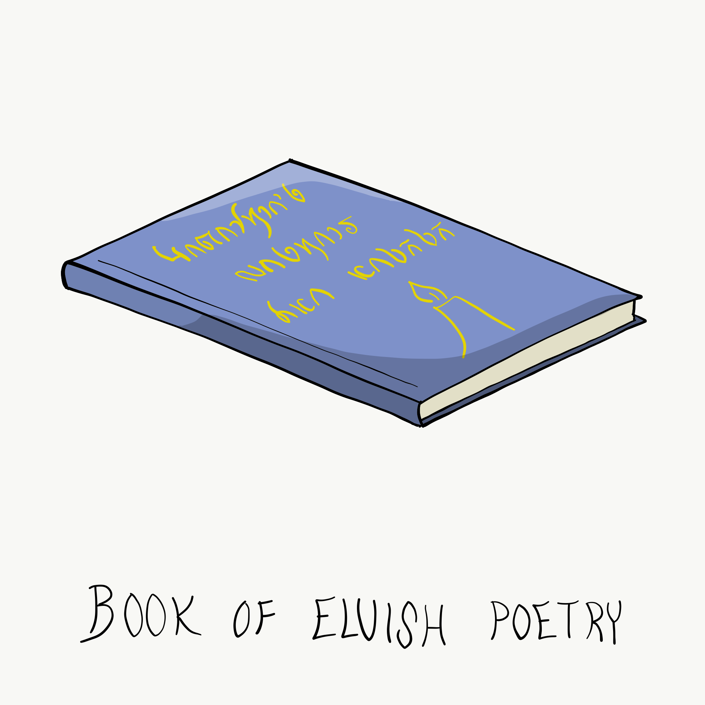
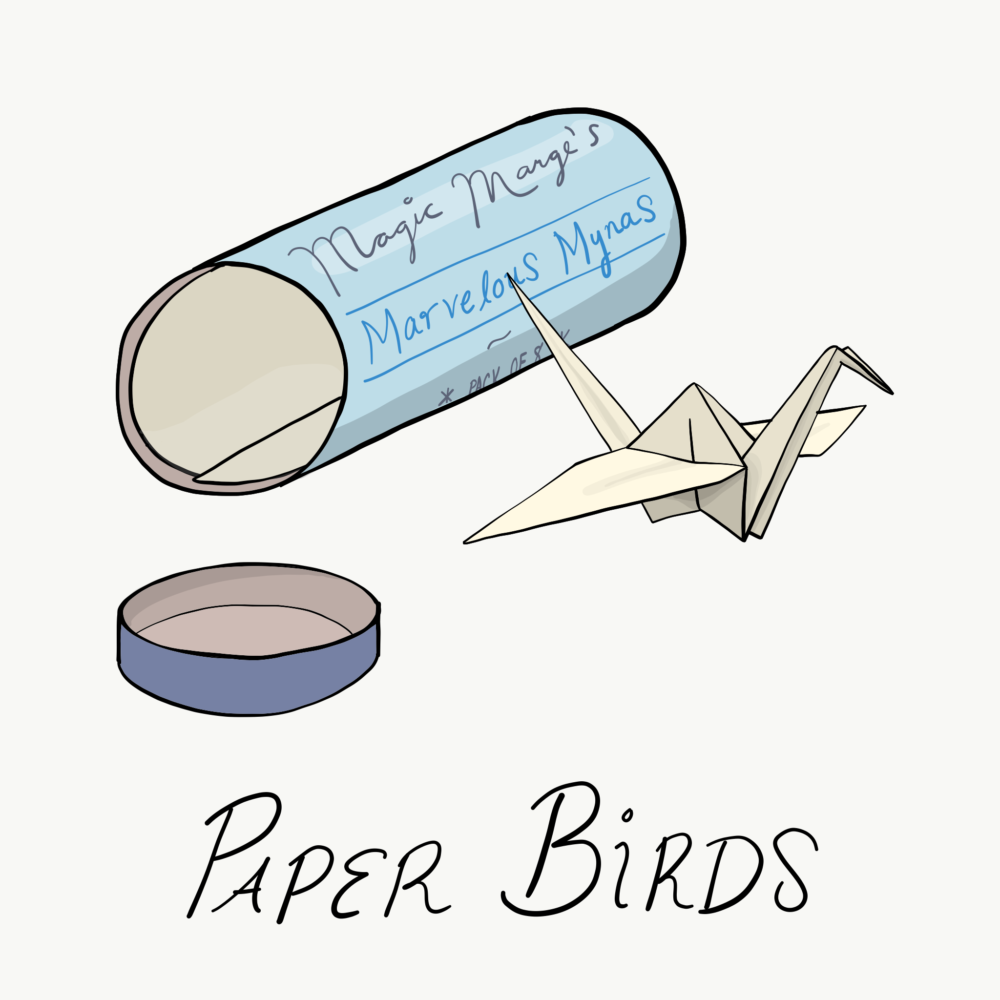
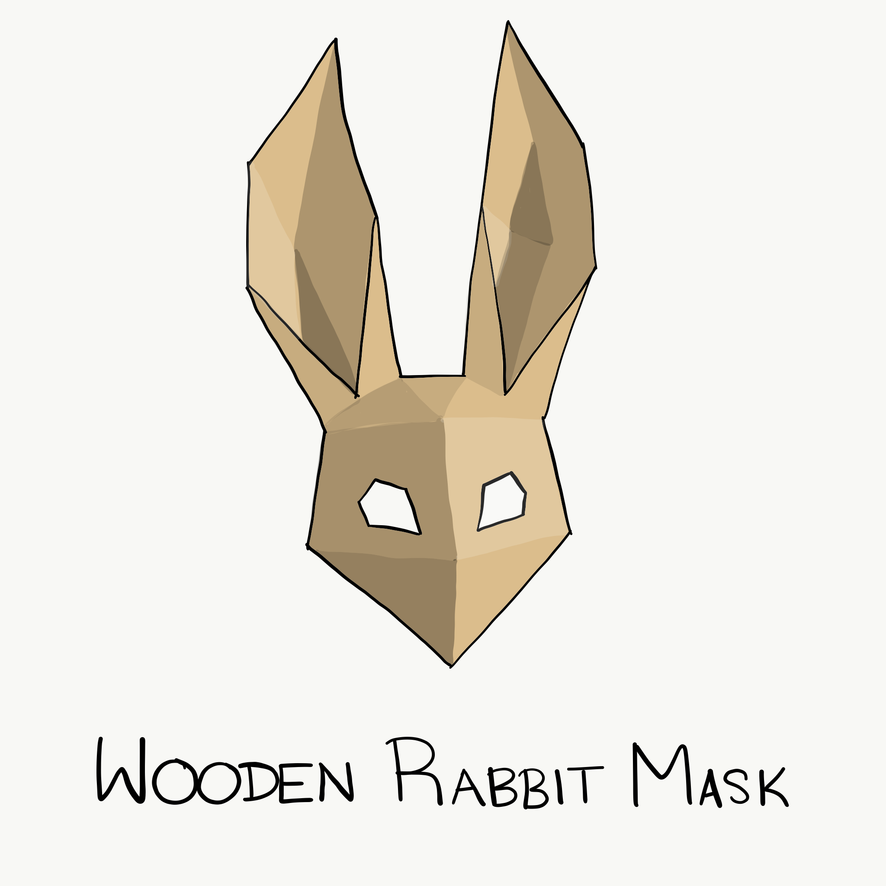

| Alchemy Jug | 12.0 lb. | 1 | Bag of Holding |
This ceramic jug appears to be able to hold a gallon of liquid and weighs 12 pounds whether full or empty. Sloshing sounds can be heard from within the jug when it is shaken, even if the jug is empty.
You can use an action and name one liquid from the table below to cause the jug to produce the chosen liquid. Afterward, you can uncork the jug as an action and pour that liquid out, up to 2 gallons per minute. The maximum amount of liquid the jug can produce depends on the liquid you named.
Once the jug starts producing a liquid, it can't produce a different one, or more of one that has reached its maximum, until the next dawn.
| Liquid | Max Amount |
|---|---|
| Acid | 8 ounces |
| Basic poison | 1/2 ounce |
| Beer | 4 gallons |
| Honey | 1 gallon |
| Maynnaise | 2 gallons |
| Oil | 1 quart |
| Vinegar | 2 gallons |
| Water, fresh | 8 gallons |
| Water, salt | 12 gallons |
| Wine | 1 gallon |

| Basket [container] | 2.0 lb. | -- | Bag of Holding |
Toggle container description
Contains 26.0 lb. of items (max: 40 lb.)
This is large basket has a sturdy lid and can hold up to 2 cubic feet/40 pounds of gear. Currently, it primarily holds cooking supplies.
| Acid (vial) | 2.0 lb. | 2 | Basket |
This glass vial is held in a protective holster and contains acid. As an action, you can splash the contents of this vial onto a creature within 5 feet of you or throw the vial up to 20 feet, shattering it on impact. In either case, make a ranged attack against a creature or object, treating the acid as an improvised weapon. On a hit, the target takes 2d6 acid damage.
| Cook's Utensils | 8.0 lb. | 1 | Basket |
Cook's utensils include a metal pot, knives, forks, a stirring spoon, and a ladle. Proficiency with Cook's Utensils lets you add your proficiency bonus to any ability checks you make using these tools.
| Heward's Handy Spice Pouch | 0.0 lb. | 1 | Basket |
This belt pouch appears empty and has 10 charges. While holding the pouch, you can use an action to expend 1 of its charges, speak the name of any nonmagical food seasoning (such as salt, pepper, saffron, or cilantro), and remove a pinch of the desired seasoning from the pouch. A pinch is enough to season a single meal. The pouch regains 1d6 + 4 expended charges daily at dawn. q
q
| Honey (jar) | 3.0 lb. | 1 | Basket |
A ceramic jar filled with one pint of delicious honey. The jar has a protective holster.
| Mess Kit | 1.0 lb. | 1 | Basket |
This tin box contains a cup and simple cutlery. The box clamps together, and one side can be used as a cooking pan and the other as a plate or shallow bowl.
| Oil (flask) | 1.0 lb. | 1 | Basket |
This ceramic flask holds 1 pint of oil and has a removable protective holster. As an action, you can splash the oil in this flask onto a creature within 5 feet of you or throw it up to 20 feet, shattering it on impact. Make a ranged attack against a target creature or object, treating the oil as an improvised weapon. On a hit, the target is covered in oil. If the target takes any fire damage before the oil dries (after 1 minute), the target takes an additional 5 fire damage from the burning oil. You can also pour a flask of oil on the ground to cover a 5-foot-square area, provided that the surface is level. If lit, the oil burns for 2 rounds and deals 5 fire damage to any creature that enters the area or ends its turn in the area. A creature can take this damage only once per turn.
| Oil (bottle) | 3.0 lb. | 1 | Basket |
This ceramic bottle holds up to 1 1/2 pints of cooking oil.
| Poison, Basic (vial) | 0.0 lb. | 1 | Basket |
You can use the poison in this metal vial to coat one slashing or piercing weapon or up to three pieces of ammunition. Applying the poison takes an action. A creature hit by the poisoned weapon or ammunition must make a DC 10 Constitution saving throw or take 1d4 poison damage. Once applied, the poison retains potency for 1 minute before drying.
| Rations (1 day) | 4.0 lb. | 2 | Basket |
Rations consist of dry foods suitable for extended travel, including jerky, dried fruit, hardtack, and nuts.
| Tinderbox | 1.0 lb. | 1 | Basket |
This small container holds flint, fire steel, and tinder (usually dry cloth soaked in light oil) used to kindle a fire. Using it to light a torch -- or anything else with abundant, exposed fuel -- takes an action. Lighting any other fire takes 1 minute.
| Wine (bottle) | 3.0 lb. | 1 | Basket |
This ceramic bottle holds 1.5 pints of wine. The bottle has a protective holster.
| Bedroll | 7.0 lb. | 1 | Bag of Holding |
You never know where you're going to sleep, and a bedroll helps you get better sleep in a hayloft or on the cold ground. A bedroll consists of bedding and a blanket thin enough to be rolled up and tied. In an emergency, it can double as a stretcher.
| Book of Poetry | 2.0 lb. | 1 | Bag of Holding |
This book is filled with traditional Elvish poetry for children.

| Bottled Breath | 0.5 lb. | 1 | Bag of Holding |
This bottle contains a breath of elemental air. When you inhale it, you either exhale it or hold it.
If you exhale the breath, you gain the effect of the gust of wind spell. If you hold the breath, you don't need to breathe for 1 hour, though you can end this benefit early (for example, to speak). Ending it early doesn't give you the benefit of exhaling the breath.
| Coin Pouch [container] | 1.0 lb. | -- | Bag of Holding |
Toggle container description
Contains 4.0 lb. of items (max: 6 lb.)
This cloth pouch can hold 1/5 cubic foot/ 6 pounds of gear.
| Coins, Gold Pieces | 3.8 lb. | 191 | Coin Pouch |
| Coins, Silver Pieces | 0.2 lb. | 8 | Coin Pouch |
| Coins, Copper Pieces | 0.1 lb. | 3 | Coin Pouch |
| Grappling Hook | 4.0 lb. | 1 | Bag of Holding |
This grappling hook, which is tied to the end of the hempen rope, can secure the rope to a battlement, window ledge, tree limb, or other protrusion.
| Healer's Kit (spare) | 3.0 lb. | 1 | Bag of Holding |
Uses left: 10
This kit is a leather pouch containing bandages, salves, and splints. The kit has ten uses total. As an action, you can expend one use of the kit to stabilize a creature that has 0 hit points, without needing to make a Wisdom (Medicine) check.
| Herbalism Kit | 3.0 lb. | 1 | Bag of Holding |
This kit contains a variety of instruments such as clippers, mortar and pestle, and pouches and vials used by herbalists to create remedies and potions. Proficiency with this kit lets you add your proficiency bonus to any ability checks you make to identify or apply herbs. Also, proficiency with this kit is required to create antitoxin and any potion of healing.
| Paper Birds | 0.0 lb. | 2 | Bag of Holding |
After you write a message of fifty words or fewer on this magic sheet of parchment and speak a creature's name, the parchment magically folds into a Tiny paper bird and flies to the recipient whose name you uttered. The recipient must be on the same plane of existence as you, otherwise the bird turns into ash as it takes flight.
The bird is an object that has 1 hit point, an Armor Class of 13, a flying speed of 60 feet, a Dexterity of 16 (+3), and a score of 1 (-5) in all other abilities, and it is immune to poison and psychic damage.
It travels to within 5 feet of its intended recipient by the most direct route, whereupon it turns into a nonmagical and inanimate sheet of parchment that can be unfolded only by the intended recipient. If the bird's hit points or speed is reduced to 0 or if it is otherwise immobilized, it turns into ash.
These paper birds came in small, wooden tube containing 8 sheets of the parchment. They were labeled "Magic Marge's Marvelous Mynas."

| Potion of Animal Friendship | 0.5 lb. | 1 | Bag of Holding |
When you drink this potion, you can cast the animal friendship spell (save DC 13) for 1 hour at will. Agitating this muddy liquid brings little bits into view: a fish scale, a hummingbird tongue, a cat claw, or a squirrel hair.
| Rope, Hempen (50 feet) | 0.0 lb. | 1 | Bag of Holding |
Hempen rope has 2 hit points and can be burst with a DC 17 Strength check. This rope has a grappling hook tied to one end.
| Waterskin | 5.0 lb. | 1 | Bag of Holding |
A waterskin can hold 4 pints of liquid.
| Wooden Rabbit Mask | 2.0 lb. | 1 | Bag of Holding |
This large face mask is shaped like a rabbit's head and made of thin, somewhat flexible wood.
